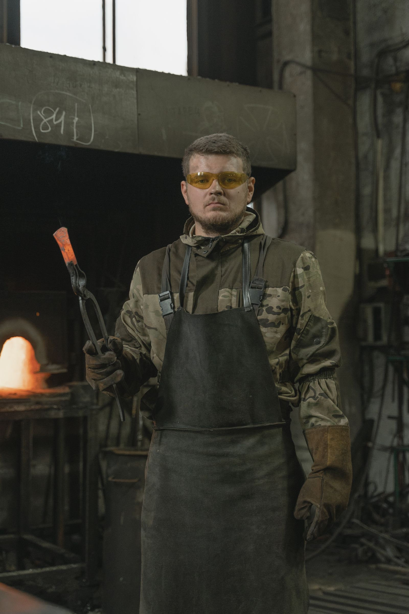

The smith
One pair of hands. Every blade on this site crossed them.

I am Lukas Brenner, 34, master bladesmith in Solingen — a city that has put edges on steel for seven hundred years and still argues about how. I served my apprenticeship in a production cutlery works, learned production speed there, then left to unlearn it: a working knife wants an afternoon of one person's attention, not eleven seconds of a line's. Journeyman's certificate in 2016, master's certificate in 2021, my own forge since 2022.
The forge makes three things: cook's knives for people who cook for a living, tools for workshops that maintain their own, and old blades whole again. It does not make ornaments. If a knife of mine is hanging on a wall in ten years, I have failed and the wall has won.
September is the forge's new year. The game season opens, the Christmas commissions arrive in the same fortnight, and the order book I keep in pencil fills two pages a week. If you want a blade for a fixed date, the planner on the prices page will tell you — honestly, in writing — whether the date and the queue agree with each other.
The steels, and what the numbers mean
A steel's name is a recipe, not a spell. Carbon content decides how hard the steel can get; the alloying decides how it behaves on the way there and at the edge. These are the four I work, and the whole truth about each:
| Steel | Carbon | Character | Working hardness |
|---|---|---|---|
| 80CrV2 | 0.80% | Tough and fine-grained; the steel I reach for first. Hones back to working sharp on a steel in a dozen strokes. | 59–61 HRC |
| 1.2842 (O2) | 0.90% | The traditional Solingen tool steel. Very keen edge, kind in the quench; my choice for chisels and drawknives. | 59–61 HRC |
| 52100 | 1.00% | Bearing steel. More carbides, so the edge survives longer between hones — and takes a little longer to hone. | 60–62 HRC |
| AEB-L | 0.65% | The one stainless I offer. Made for razors originally; fine-grained for a stainless, and it will not rust while you eat lunch. | 60–62 HRC |
Hardness, stated honestly
Harder is not better. Harder is a trade. At 62 HRC and above, a kitchen edge stops rolling and starts chipping — the steel has no give left. At 57 HRC the edge survives anything but folds over by the end of a service and lives on the steel. For a knife that works daily, 59–61 HRC is where the trade balances, and that is where I harden. When a catalogue boasts 65 HRC on a chef's knife, it is boasting about the number that sells, not the number that cuts. I print the Rockwell reading of your actual blade on your invoice, measured on the tang after tempering — if it reads outside 59–61, the blade does not ship and you are told why.
Edge geometry — the part nobody photographs
Two knives of identical steel and hardness cut differently because of shape. Mine are ground thin behind the edge — about 0.3 mm a centimetre up from it — with the edge itself at roughly 15° per side. A thick-shouldered blade wedges in a carrot no matter how sharp its last millimetre is. This is also why my edges are maintained on a fine steel or a 3,000-grit stone, never a pull-through sharpener: the pull-through tears metal off at whatever angle it pleases and undoes the geometry in a month.
Caring for carbon steel
- Dry it after washing. Thirty seconds with a cloth. Carbon steel left wet will spot by morning.
- Patina is not rust. The grey-blue film that builds over months is the steel protecting itself — leave it. Rust is orange, raised and rough; that comes off with a cork and a dab of stone powder, or comes to me.
- Oil for storage. A drop of food-safe camellia oil on a cloth if the knife will sit for weeks.
- Never the dishwasher. The heat warps handles, the salts pit edges, and the rattling chips what the salts miss.
- Hone little and often. Ten light strokes on a fine steel before service beats an hour of grinding in December.
Forge days — what actually happens
Saturdays, 9:00–17:00, €185 per person, six places. You forge a 125 mm utility knife and take it home sharp. The day runs: safety talk and aprons (9:00), forging your blank (9:30–12:30), lunch from the bakery over the road, grinding and hardening (13:30–15:30), handles and honing (15:30–17:00). Two rules outrank all others, and they are not negotiable:
- Eye protection on, always, from the first hammer blow to the last — provided, and there are no exceptions for photographs.
- Gloves off at the grinder. A glove near a moving belt is a handle for the machine to take your hand by. Tongs and bare hands at the belt; gloves are for the hot work only.
- Closed leather shoes, no synthetic fleece (it melts), hair tied back, minimum age 16 with an adult for under-18s.
- Nobody works tired or rushed. We stop for coffee at eleven whether the steel is ready or not. Steel waits. People matter more.